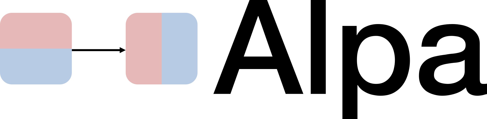
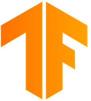

Resource-adaptive cluster scheduler for deep learning training.
AdaptDL: About
×
AdaptDL is a resource-adaptive deep learning (DL) training and scheduling framework. The goal of AdaptDL is to make distributed DL easy and efficient in dynamic-resource environments such as shared clusters and the cloud.
 Github »
Github »Speed up and distribute your Deep Learning models automatically.
AutoDist: About
×
AutoDist is a distributed deep learning training engine for TensorFlow. AutoDist provides a user-friendly interface to distribute the training of a wide variety deep learning models across many GPUs with scalability and minimal code change.
Efficient hyperparameter tuning via uncertainty modeling
Tuun: About
×
Tuun is a toolkit for efficient hyperparameter tuning via uncertainty modeling, with a focus on flexible model choice, scalability, and use in distributed settings.

Auto parallelization for large-scale neural networks
Alpa: About
×
Alpa is a system for large-scale distributed training. Alpa is specifically designed for training giant neural networks that cannot fit into a single device.

Toolkit for Machine Learning and Text Generation
Texar-TF: About
×
Texar is a highly modularized and customizable toolkit to support a broad set of machine
learning (ML), especially natural language processing (NLP) and text generation tasks.
Texar provides comprehensive modules for data processing, model architectures,
loss functions, training and inference algorithms, evaluation, etc.
Use Texar to compose whatever models and algorithms you want.

Toolkit for Machine Learning and Text Generation
Texar-PyTorch: About
×
Texar-PyTorch is the PyTorch equivalence of Texar-TF, with mostly the same
interfaces.
Texar-PyTorch integrates many of the best features of TensorFlow into PyTorch,
delivering a set of highly usable and customizable modules superior to PyTorch
native ones, including
- Data: More ready-to-use APIs; more customizable; more efficient
- Model: Better factorization; more comprehensive high-level APIs
- Training: High-level APIs to avoid any boilerplate code
- Data: More ready-to-use APIs; more customizable; more efficient
- Model: Better factorization; more comprehensive high-level APIs
- Training: High-level APIs to avoid any boilerplate code

NLP Pipeline with Text Analysis, Generation, & Retrieval
Forte: About
×
Forte is a high-level and customizable toolkit for building arbitrary complex NLP pipelines.
With Forte, you can:
- Plug in any NLP components in a pipeline, including text analysis,
generation, retrieval, etc.
- Wrap any off-the-shelf NLP models from other libraries as pipeline components,
such as spaCy, StanfordNLP, AllenNLP, etc.
- Obtain a uniform representation of data and intermediate results throughout
pipeline.
- Plug in any NLP components in a pipeline, including text analysis, generation, retrieval, etc.
- Wrap any off-the-shelf NLP models from other libraries as pipeline components, such as spaCy, StanfordNLP, AllenNLP, etc.
- Obtain a uniform representation of data and intermediate results throughout pipeline.
Building web interfaces for your NLP workflows